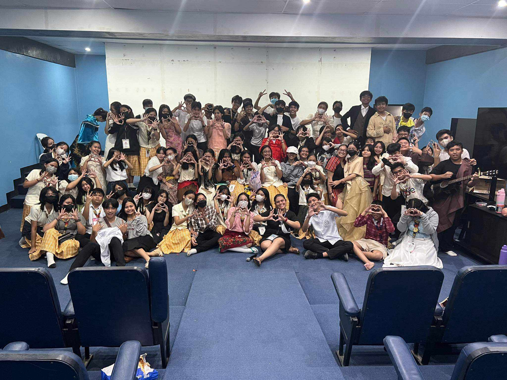
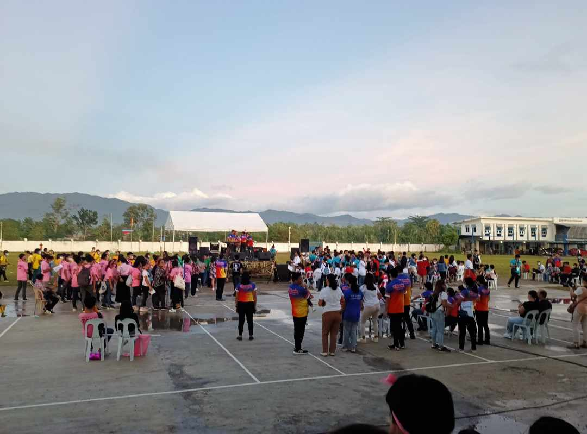

The annual Intramurals and StemFest are outlets to take a break from the pressure. Assessments like the Noli Me Tangere roleplay are where good memories start. As the gates open for city scholars to go home, a sunset accompanies the theme, creating a serene experience.
INTRAMURALS
STEM FEST
& SUNSETS
Life in PISAY is more than studying and answering assessments. It is about making relationships, building strong friendships, creating memories together, and the end goal, graduating together. So, come and join us and experience life as an isko, pagasa ng bayan.